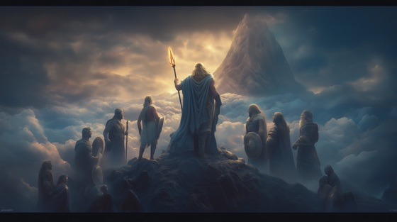

After freeing his siblings from the stomach of Cronus, Zeus united them to form a new divine front against the rule of the Titans. The Olympians—Zeus, Poseidon, Hades, Hera, Demeter, and Hestia—stood together for the first time, calling upon their divine strength to overthrow the old regime.
This was the birth of Olympus not just as a mountain, but as a divine idea: a new order shaped by rebellion, unity, and ambition. The gods prepared to face their progenitors in the most cataclysmic war of myth—the Titanomachy—with each Olympian embodying a domain of nature and force.
It is in this moment that the Olympians ceased to be children of Cronus and became gods of their own fate.
Call to Olympus
We rose from ash, from father's bile
With thunder hearts and eyes of trial
No longer chained inside his shade
We are the storm the Titans made
So brothers, sisters—raise your cry
We were born to see gods die
Call to Olympus, sky ignite
We are the fire, we are the fight
The old shall fall, the new shall rise
With wrath that tears the throne from lies
Poseidon's wave will drown their screams
Hades brings the death between
Hera binds them, cold and proud
Demeter sways the famine's shroud
We are not children now returned—
We are the blades that Titans earned
Call to Olympus, sky ignite
We are the fire, we are the fight
The old shall fall, the new shall rise
With wrath that tears the throne from lies
The mountain calls, our home is born
From war and stone, a crown is sworn
Let Hestia light the sacred flame—
And write our names in star and name
ZEUS: “Let Titans tremble, let Cronus run—”
POSEIDON: “The sea will drag what sky has done.”
HADES: “And I will close the gate behind.”
Call to Olympus, sky ignite
We are the fire, we are the fight
The old shall fall, the new shall rise
With wrath that tears the throne from lies
So raise the banners in the storm—
Olympus calls. A god is born.